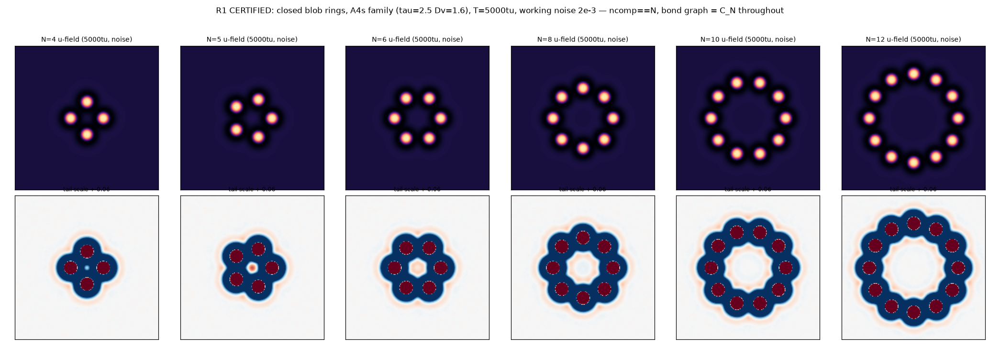
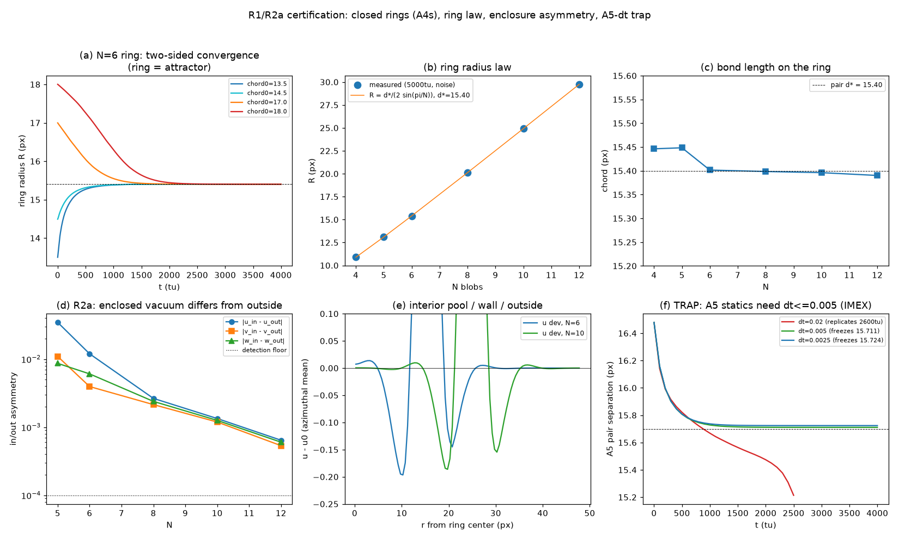
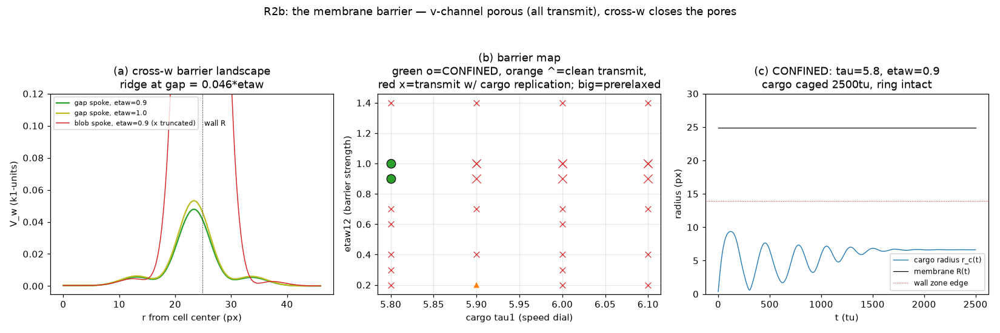
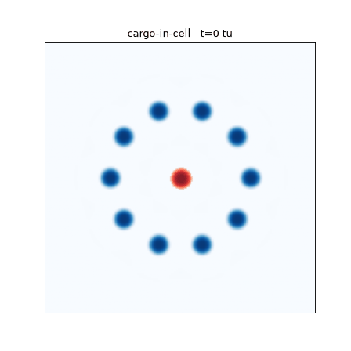
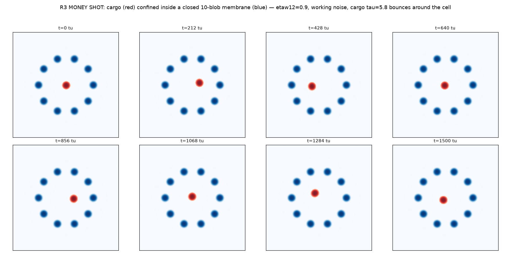
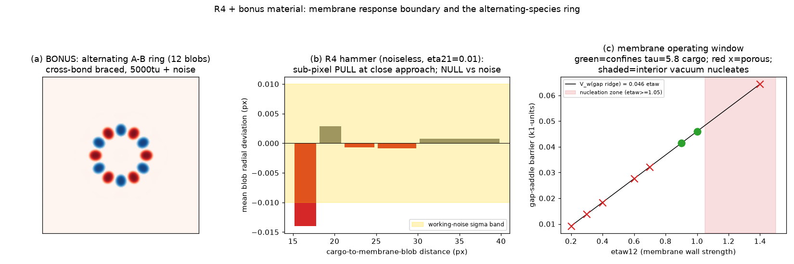

Bounded structures: rings, membranes, and the first cell
Post 8 — closed topology: blob rings with a genuine inside, speed-selective
membrane walls, and a confined cargo. All gates audited on fresh seeds as usual.
The goal (set as: "a structure with nontrivial π₁"): a closed
loop of blobs whose interior is genuinely distinct from the exterior — an inside and an
outside — then something kept inside. This is the road toward cell-like
compartments where interior composition couples to the whole.
Rings exist, and they are just bonds bent into a loop
N blobs placed at bond spacing around a circle relax into a stable closed ring
for every N tried (4, 5, 6, 8, 10, 12 — up to the box limit): blob count and the
bond-graph cycle CN verified at every record over 5000 tu with working noise,
10k-tu longruns at N=6/10, grid-refinement shift 0.023%. The ring radius obeys the chord
law R = d*/(2·sin(π/N)) with chord lengths 15.39–15.45 ≈ the flat-space bond length
15.40: a ring is N ordinary bonds bent by topology — curvature costs almost
nothing. The rings are attractors (two-sided convergence from squeezed and stretched
initial chords), which the audit confirmed from an out-of-set chord on a fresh seed.

The ring family: final states N=4 through 12 (activator fields). Same bond, different topological charge.

Ring certification: chord length vs the flat d* across N (the ring law); two-sided radius convergence; noise longruns with the bond-cycle check at every record.
Numerics trap, again caught by an audit anchor: the deep-bond
A=5 family's statics are integrator-artifacted under IMEX at dt=0.02 (pairs slide
through the bond and replicate; dt≤0.005 restores d*=15.71). This retroactively explains
a 1.8% "integrator band" noted in the M4 campaign. The original M2 certifications
(explicit-Euler era, dt=0.0025) are safe. Membranes are built from the A=4-statics
family, which is verified exact at dt=0.02.
The interior is real — but naive walls are porous
Every certified ring encloses a measurably different interior: the activator pools
up (+0.035 in k1-units at N=5, decaying with N), the slow inhibitor dips, the halo
rises — the superposition of N stamps, as theory predicts. But enclosure is not
confinement: against the naive v-channel wall, a kicked cargo transmitted in 20/20
attempts. The honest surprise: the gaps between wall blobs are attractive channels
(the potential drops −0.004 into the wall) — only the cores repel. A picket fence of
attractive pickets is a turnstile, not a wall.
The fix is a new legal wiring: one-way cross-w coupling — the cargo species
feels the ring species' long-range exclusion halo (vacuum-exact, and one-way so the
ring stays rigid). That closes the pores with a measured barrier V_w = 0.046·η_w at
the gap saddle (0.82·η_w at the cores), and produces something better than a wall:

The barrier, measured: potential along the approach path for v-only walls (attractive gaps — porous) vs cross-w walls (real saddle); the transmit/confine boundary in the (η_w, cargo-τ) plane; the nucleation ceiling at η_w≥1.05.
Speed-selective membranes, for free. The barrier is finite, so
crossing depends on the cargo's drive: at η_w=0.9, a τ=5.8 cargo is confined
while a τ≥5.9 cargo passes — a membrane that sorts by speed, i.e. a cell wall
with built-in channels. No gating machinery required; it falls out of the barrier
physics.
The first cell

Cargo in a cell (activator fields; ring blobs blue, cargo red): a 10-blob membrane with a motile cargo (τ=5.8) bouncing off the wall from inside — 3000 tu, four seeds plus the controller audit at a fresh position and kick angle: never crosses (max radius 8.3–9.4 vs cage ~10), ring bond-cycle closed at every record, nothing nucleates, nothing dies.

Trajectory summary: motile cargoes rattle around the interior (radius traces below the cage line); a static cargo just parks. The mandatory new primitive: 500 tu of cargo-free prerelax — pasting the cargo into a fresh ring at high η_w nucleates daughter rings (an initial-condition artifact, mapped and killed).
Can the inside move the outside? (the honest part)
The one-way membrane is structurally rigid: the confined cargo's collisions
move the ring's center of mass by exactly the noise floor. The two-way wirings that
would let cargo push the wall are a mapped minefield — w–w feedback cascades
(replication or vacuum detonation), v-couplings split the cargo at the wall, and the
one legal two-way setting (η₂₁=0.01) produces a response below working noise.
A noiseless "hammer" test certifies the mechanism at sub-pixel scale: wall blobs
deflect 0.014 px toward the cargo (the v-well pulls, not pushes) with COM motion
0.0039 px vs an exact 0.0000 control — the wiring moves the light thing, not the
wall. Interior-driven membrane motion needs heavier interiors (multi-blob), a
floppier ring family (A=5 at dt=0.005, 4× cost), or two-species membranes — the
mapped doors for phase 6.

Left: the R4 backreaction map — every two-way wiring and its failure mode; the legal corner and the sub-pixel pull certification. Right, bonus material: the alternating-species ring (A-B-A-B in the xv architecture, cross-bonds at 8.1 px, double-braced by each species' second shell landing on its own bond distance) — the first structure whose composition order is topologically enforced.